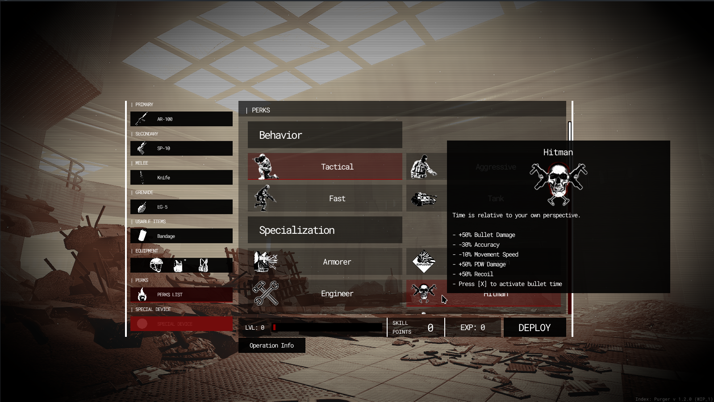

Module: loadout_system
Documentation last edited: October 23, 2025 at 14:33 UTC
Description
Итак, в старые времена не было никаких меню для снаряжения. Тебе приходилось самостоятельно выбирать оружие в определённой локации, где ты просто использовал пропсы для выбора своей экипировки. И всё. Работало ли это? Да. Однако после тестирования сборки 4, после нескольких игровых сессий, я понял, что... это скучно. Нет, серьёзно, скучно иметь очень ограниченный набор оружия, очень ограниченный набор брони и, конечно, никакой возможности выбирать перки, кроме специальных устройств. Именно тогда было решено сделать меню для снаряжения вместо этого. Зачем тебе нужно это знать? Ну, если ты заглянешь в код, ты можешь заметить там МУСОР. Не трогай этот мусор и просто знай, что он там делает.

Общая техническая информация
-
"res://modules/loadout_system/assets/ui_scene/loadout_ui.tscn"
- это сцена, в которой находится UI. Маловероятно, что тебе понадобится работать с этим, но, эй, тебе нужно знать на всякий случай.
- Узел
LoadoutSelection
- это тот, который открывает крутой UI снаряжения.
-
LoadoutSystem
- это синглтон, который обрабатывает всю логику.
-
LoadoutSystem
использует
Globals
для хранения данных. Он не использует локальные переменные и сохранение
Checkpoints
так уж много, потому что у него не было proper системы сохранения к тому времени, когда он был сделан.
Просто, не так ли?
Как добавить предмет?
- Найди
"res://modules/loadout_system/assets/items/"
- Реши, что ты хочешь добавить. Каждая папка - это отдельная категория, которая обрабатывается отдельно.
- Создай соответствующий файл, производный от
Resource
.
-
LoadoutPerkItem
для перков.
-
LoadoutOperationItem
для "операций" (забудь об этом, это устарело)
-
LoadoutWeaponItem
для оружия.
-
LoadoutSpecialDeviceItem
для специальных устройств.
-
LoadoutArmorItem
для частей брони.
-
[Для оружия]
Сделай иконку в локации
"loadout_iconmaker"
.
-
[Для всего остального]
Следуй процедуре для иконки:
- Возьми изображение, с которым хочешь работать.
- Выбери графический редактор по своему выбору.
- Открой изображение.
- Обесцветь до чёрно-белого изображения.
- Настрой яркость/контрастность (и яркость, и контрастность высокие).
- Добавь резкость.
- Вырежи для прозрачности.
- Сохрани по адресу:
-
"res://modules/loadout_system/assets/ui_images/big_
[NAME]
.png"
для большого изображения иконки.
-
"res://modules/loadout_system/assets/ui_images/small_
[NAME]
.png"
для маленького изображения иконки.
- Настрой оба свойства
"image_icon"
и
"image_icon_small"
в твоём файле, производном от
LoadoutItemDataBase
.
Пример кода
# Установить основное оружие
LoadoutSystem.set_primary_weapon("AR-100")
# Получить основное оружие
var primary_weapon = LoadoutSystem.get_primary_weapon()
# Также есть...
# get/set_secondary_weapon
# get/set_melee_weapon
# get/set_grenade_weapon
# get/set_usable_item
# get/set_special_device
# Применить часть брони
var item = load("res://modules/loadout_system/assets/items/armor/body/body_armor_lvl1.tres")
LoadoutSystem.set_armor_part(item.armor_type, item.get_armor_data_dict())
# Применить перки
var perks =
[
load("res://modules/loadout_system/assets/items/perks/complex/perk_maniac.tres"),
load("res://modules/loadout_system/assets/items/perks/behavior/perk_2_fast.tres")
]
LoadoutSystem.set_perks_list(perks)
# Выдать снаряжение игроку
var player = PlayerData.player
LoadoutSystem.refill_supplies()
var loadout = LoadoutSystem.LoadoutMask.new()
loadout.give_first = true
loadout.give_second = true
loadout.give_melee = true
loadout.give_item = true
loadout.give_grenade = true
loadout.give_special_device = false
loadout.give_armor = true
loadout.activate_perks = true
LoadoutSystem.give_loadout_to_player(loadout)
player.initialize_perk_related_things()
player.nv_enabled = false
player.flashlight_enabled = false
LoadoutSystem.reset_refill_supplies()
Если тебе интересно о mystery режимах, ты можешь проверить их в
"res://modules/loadout_system/src/logic/perk_mystery.gd"
Веселись.
General Information
Root directories list
assets, docs, src
Nodes
item
main_control
loadout_presentation_shared
LoadoutPresentation
loadout_presentation_page
LoadoutSystem
LoadoutSelection
icon_gen_control
Classes
perk_engineer
perk_hitman
op_factory
perk_mystery
LoadoutLogicBase
Resources
LoadoutItemDataBase
LoadoutPerkItem
LoadoutOperationItem
LoadoutWeaponItem
LoadoutSpecialDeviceItem
LoadoutArmorItem